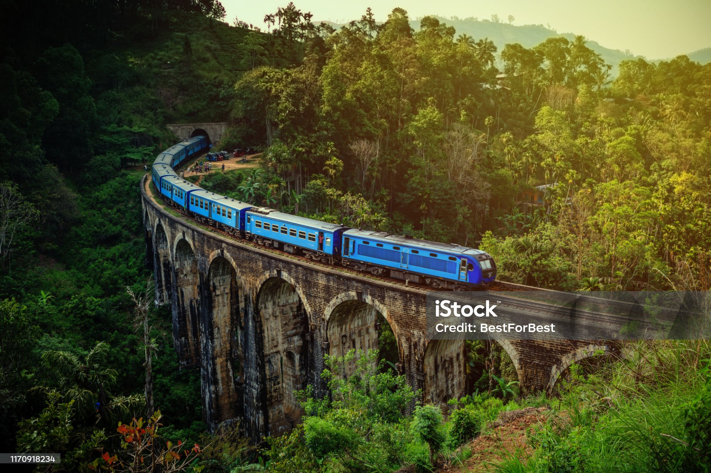
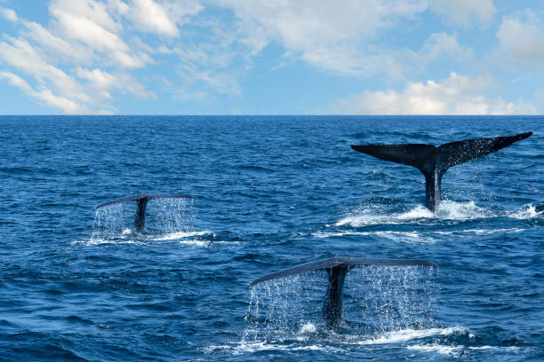
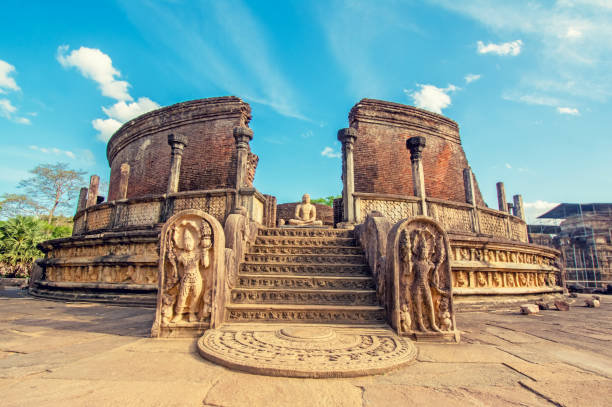
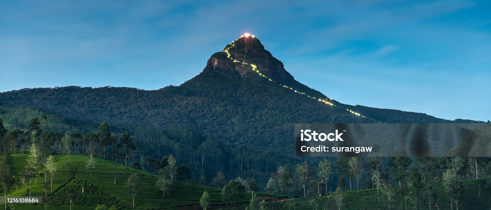

Popular Destinations

Sigiriya Rock Fortress
🌟 Matale District
An ancient rock fortress and palace complex, famous for its beautiful frescoes and advanced hydrological engineering.

Galle Dutch Fort
🌟 Galle District
A historic UNESCO World Heritage site that beautifully blends European colonial architecture with stunning coastal views.

Ella & Nine Arch Bridge
🌟 Badulla District
A scenic mountain town famous for the iconic colonial-era railway bridge, lush tea plantations, and hiking trails.

🌟Matara District
A beautiful coastal town famous for whale watching and its stunning, palm-fringed beaches.

Polonnaruwa
🌟Polonnaruwa District
An ancient kingdom featuring well-preserved ruins, grand stupas, and magnificent irrigation tanks.

Adam's Peak
🌟Ratnapura District
A sacred mountain known for the 'sacred footprint' and breathtaking sunrise views after a night hike.